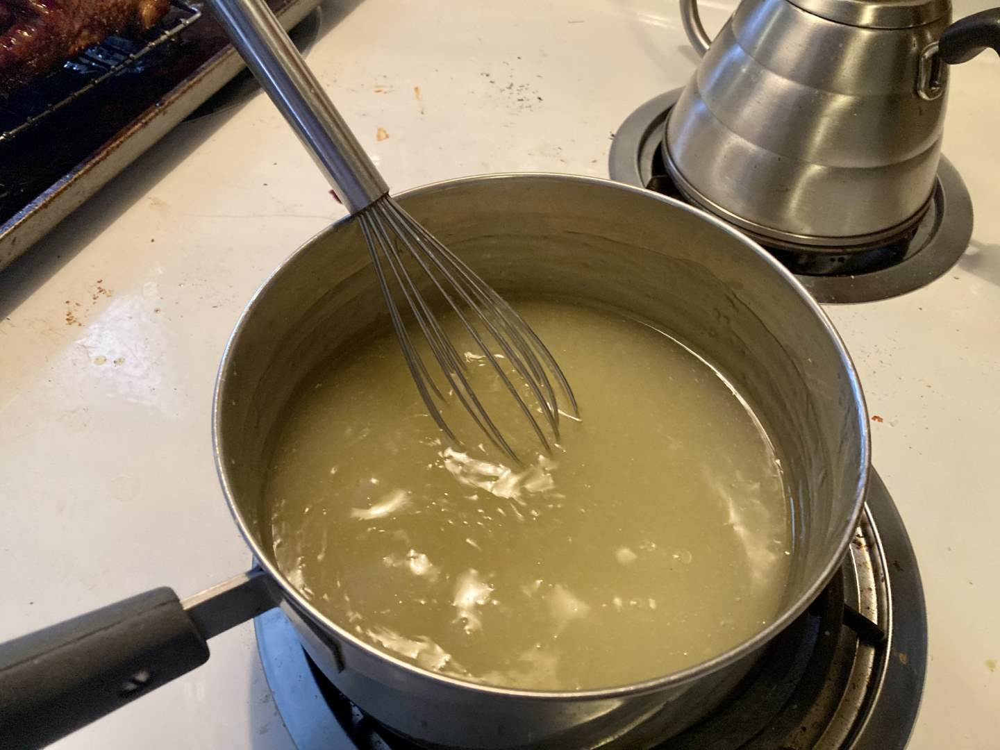
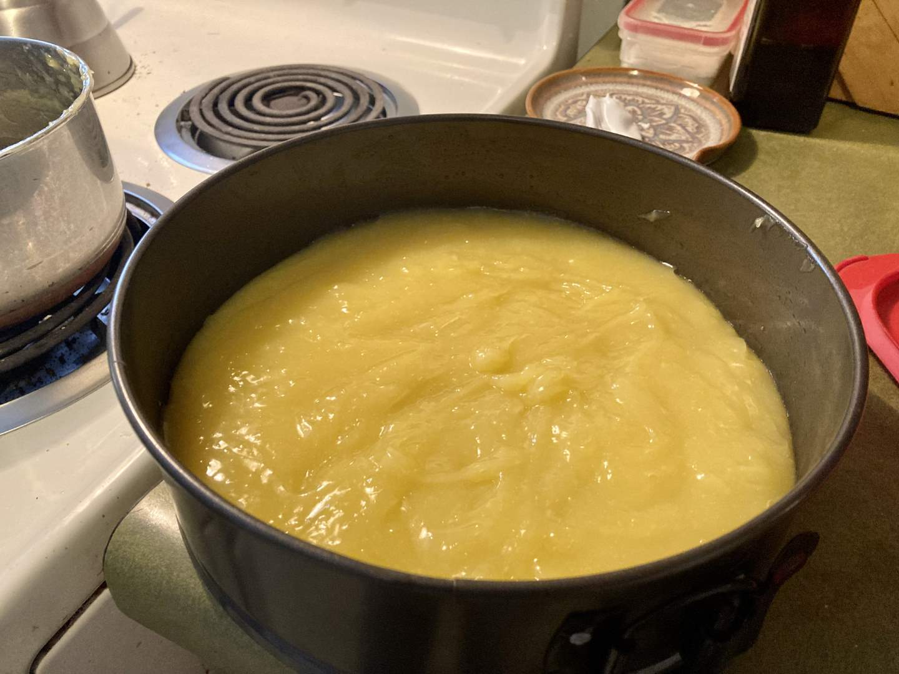
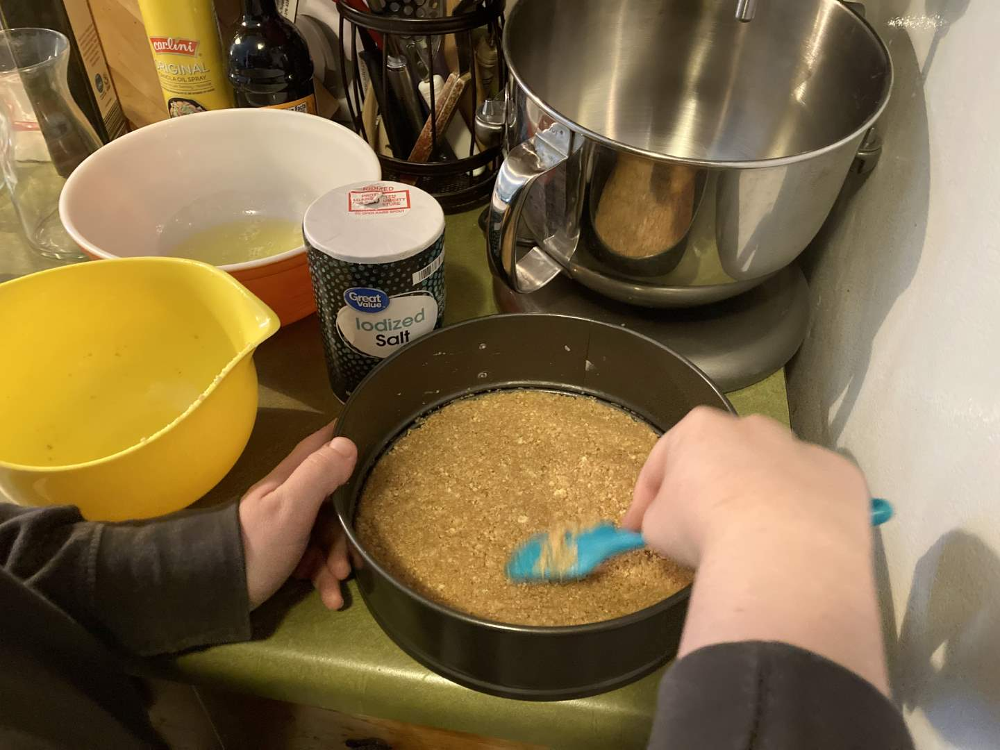
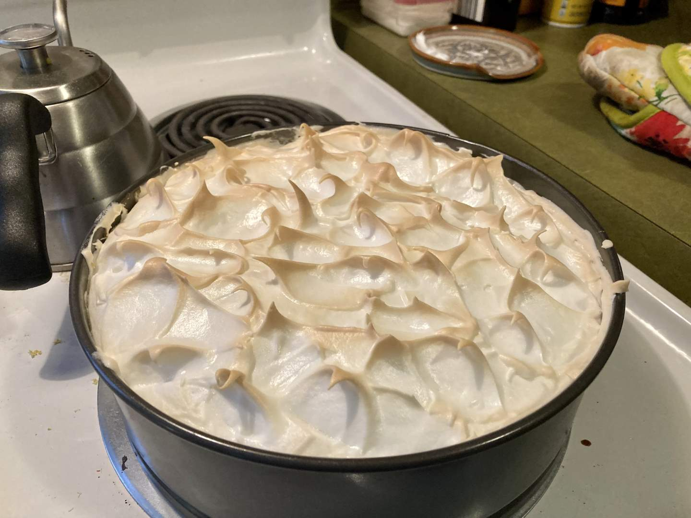
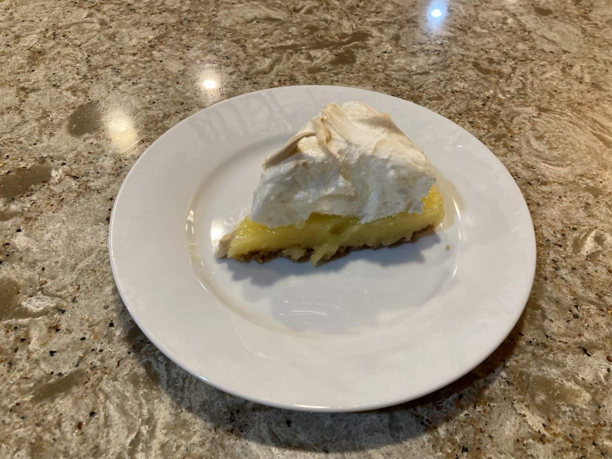

Pie 39: Lemon Meringue Tart
2024-03-23Recipe from A Table Full of Joy.
Taste:
Difficulty:
Vibes:
This pie is brought to you by the Strawberry Shortcake character, Lemon Meringue. At the moment of this pie’s conception, I could not remember why the words lemon meringue were so deeply seated in my psyche. After soul-searching and intense reflection, I finally remembered the yellow-haired, optimistic cartoon character. She is not the only pie-themed character in the Strawberry Shortcake universe, so perhaps we will return to them for ideas.
 Ben was determined to make another attempt at a meringue, so I prepared the lower elements of the pie with a graham cracker crust and lemon custard. This pie-a-week adventure has removed the fears I once held about custards, which is quite exciting! Though I am not guaranteed to have each one turn out stellar, I know they will be decent as long as I do not scramble the eggs, an evil outcome easily avoided by the patient chef.
We were very pleased with this meringue compared to the one we made for the grapefruit pie. It did shrink a little from the sides of the pan as it cooled, but the peaks were perfect and the texture was delightful. Compared to our first lemon pie, this one had a pleasant taste that made you crave more without pucker your lips. It was also well appreciated by Ben’s family. While we think most our pies are great, they are not always crowd-pleasers. It is always exciting to stumble across a truly phenomenal pie with broad appeal that we can bring to other events!
